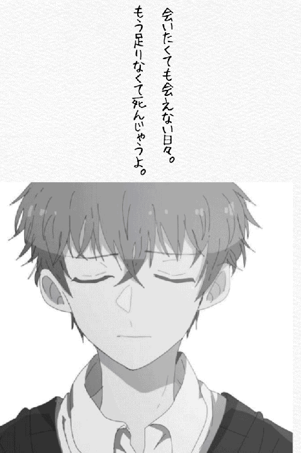

| イケメン王子とオタクな俺２ | |
| 夏れもん | |
| (2018) | |
------やっと会えた。
ずっと会いたかった人。もう会えないかもと思ったこともあった。何度も何度もくじけそうになった。でも、待ってた。ずっと、待ってたんだ。
あの時、自分の気持ちに気づくのが遅過ぎて、何も伝えられないまま藤野は行ってしまった。だからまず、きちんと伝える。もう勝手に自己完結して逃げられないように。
これが俺の気持ちの全て。はっきり言うから、受け止めて。
「好きだ、ばか」
ほんとに、ばか。
「俺の方が百倍好き」
藤野が俺を抱きしめて囁いた。その言葉の甘さに胸がきゅっとなって、そこからあたたかさが広がっていく。
「今も？」
「今も。これからも」
藤野が、今でも、俺を好き......
なんてうれしいんだろう。本当によかった。あぁ、でも、
「でも、俺のが好き」
藤野の目をまっすぐに見て告げる。
ずっと想ってたんだから。この三年間をなめんな。
「そんなに？」
藤野がからかうように言った。
......調子に乗ってる。
「うざ」
二人の間には何の隔たりなどなかったように、いつもの調子が自然と出た。
それを聞いた藤野が笑いだす。藤野の笑顔。久しぶりに見る、本物の。
------ずっと、この笑顔に会いたかった。
指を絡めれば、あの夜に戻る。握り締められた手の力がもう離さないと言われているようで、同じ想いを込めて強く握り返した。
藤野が愛おしそうに微笑む。その顔がうれしくてたまらないと言っているから、きっと、想いは伝わっている。
でも......このつらい三年間を振り返れば、やっぱり百倍くらい愛されないと割に合わない。
藤野を睨みつける。だって......そうしないと泣いてしまいそう。
「やっぱお前の方が好きじゃなきゃ許さん」
「ぷっ......あはは！」
あ、この笑い方。大好きなカラッとした明るい笑い声。
「だから好きだって」
優しい声で告げられて、手を弄ばれる。
「百倍くらいは愛せよ」
照れ隠しにそう言うと、藤野はまた笑った。
「だから愛してるって」
相変わらずの天然たらしだな。
------でもま、俺も相当好きだから、頑張ってね。
改めて、三年ぶりの藤野を見る。
あぁ、また。どうして、そんなに。
「てかなんでまたかっこよくなってんだよ。マジムカつくんですけど」
「何それ」
なんででもムカつくんだよ。そうだ、とある考えがひらめいた。
「今度お前の大学遊びに行くから」
「え？ なんで」
「いいから」
周りを牽制しに行くんだよ。こんないい男周りがほっとくわけがない。覚悟しとけ！
「医学部、受かったんだろ？」
ずっと気になっていたことを聞いてみる。
「おかげ様で」
「よかった」
心底ほっとする。でも、初詣で俺がお願いしておいてあげたからだ。
「大学どう？」
「勉強は大変だけど、頑張ってるよ」
「どうせモテまくってんだろ」
聞かなくてもわかってる。相変わらずムカつくぜ。
「七瀬ほどじゃないから」
「嫌味か」
「なわけねーだろ」
うん、やっぱりちょっとぐらい心配されたいな。
「あー、俺、お誘いいっぱいあるから、ちゃんとつかまえとけよ」
「......行くのかよ」
不機嫌そうなつぶやきに嬉しくなった。藤野が妬いているのだと、今なら分かる。
「いや、つかまえられてたいだけ」
ふてぶてしく言ってみると、藤野が嬉しそうに笑った。
こんな仕事をしていると、確かに誘いはある。だけど、ずっと一途に藤野だけだったよ。心が動いたのは、ただひとりだけ。恋なんて、これしか知らない。
「七瀬は大学行けてんの？」
「ちゃんと行ってる。俺、えらすぎじゃね？」
おかげでほとんどプライベートがなかった。だけど、忙しい方がよかった。藤野のいない日々はつまらなすぎて、くじけそうな日もたくさんたくさんあったから。
「忙しいのにえらいな。大騒ぎならない？」
「誰も気付いてないから大丈夫」
悲しいくらいにな......。
「あー、そうね」
「俺、存在消すの得意技みたい」
「知ってる」
......どういう意味だよ。
「この仕事始めてよく言われるけど、俺、無意識にオンとオフの区別が出来るみたいなんだ。意識的に本気モードの時もあるけど。ステージの上とかカメラの前だと」
だって、いつもその仕事で藤野を落とす気持ちで臨んでいたから。
「だけど、七瀬が芸能界なんてな。あの頃は外見なんて無頓着だったのに」
「俺今でも人の美醜には疎いよ。お前がかっこいいってことしかわかんない」
なんでかな。藤野じゃなかったら、皆その他大勢でしかないんだ。自分も含めて。
藤野の顔が真っ赤になる。
「......何その殺し文句」
あ。口がすべってた。
それから、二人でベンチに座って夜景を眺めた。あの夜と変わらず、キラキラと輝いて心を奪う。隣の人みたいに。毎年、藤野を想いながら一人で見た。
泣いたことだってある。だけど今は、隣にいる。
「メリークリスマス」
「うん、メリークリスマス」
そう言い合える人がいる。その喜びを噛み締める。
藤野の手を取る。その存在の確かさを感じたくて。
「ポケット」
「ん」
藤野がポケットに二人の手を入れると、あの夜の気持ちが蘇ってくる。
とたんに胸の鼓動がうるさくなった。
「来年も来たい」
ぽそりとつぶやく。
「毎年来よう」
藤野がはっきりと言った。
藤野がこれからもずっと、俺の隣にいるつもりでいる。どうしよう、うれしい。心をあったかくする、この夜景みたいだと思った、この人。相変わらず、一緒にいるだけで。
クシュンッ、とふいにくしゃみが出た。
「七瀬、大丈夫？」
心配そうに覗き込んでくる藤野を睨み付ける。
「藤野が自分以外に看病させんなとか言うから、俺毎年二十五日一人で死んでるんですけど」
「ごめん。ほんと、ごめん。これからは待たせないし、もし風邪ひくことがあっても俺が看病する」
「風邪うつっても文句言うなよ。三年分こき使ってやるからな」
違う。本当は、三年分甘えさせてほしい。
「頑張ります」
「......じゃあ、うち、来て」
藤野の手を引いて立ち上がった。
裏山を下りながら話す。
「今俺、都心部に一人暮らししてんだ」
「そっか。もう、あの部屋には住んでないんだな」
残念そうな藤野に冗談っぽく笑って返す。
「あの部屋まだあるから、いつか一緒に住む？」
藤野が卒業してからとか。そんなの、どうですか？
藤野は立ち止まって一瞬固まると、「それいいな」とはにかんだ。
嬉しそうな藤野を見て、俺も嬉しい。ふたりの未来に、当たり前のようにお互いがいることが、すごく、嬉しい。
大通りに出るとタクシーを拾った。タクシーに乗り込むと、なんだか一気に安心してしまった。脱力して藤野にもたれかかってみる。
ねぇ、呼んでもいいかな。
「はる」
愛しい名前をそっと口にする。
「ん？」
俺の心を裸にする魔法の名前。
「はる」
もう一度呼んですり寄る。
「何？」
「んー、呼びたいだけ」
ふにゃりと顔がほころぶ。ずっとずっと、こう呼びたかったんだ。
「......覚えてたんだな、そう呼んだこと」
「ん」
弱ってると甘えたくなるから。そんな時に呼びたくなる。
近付くと、懐かしいはるの匂いがした。くんくんと鼻をきかせる。
「いい匂い」
「あ、ごめん、汗かいたから」
「ううん、それがいい」
もう一度くんくんすると、
「やっぱ気になるからちょっと離れて」
藤野が少し離れる。
前もこんなやりとりをしたなと少し可笑しくなってくる。今も昔も変わっていない俺たち。
「やだ」
嫌がらせのようにもっとすり寄ったら、「変態」なんて言われた。すごく会いたかったんだ、当たり前だろ。
マンションは普通のワンルームだ。別に誰にも気付かれないし。ただ、ギターを弾くから防音にはなっている。
「ここ」
部屋の前で立ち止まる。
「へー。案外普通だな」
「寝に帰るだけだから」
鍵を開ける。ドアを開く前に、藤野を振り返った。小首を傾げて、じっと上目遣いで見つめる。
「......なんにもしない？」
藤野が黙って固まっている。
「う、そ」
俺は藤野の耳に唇を寄せて、くすりと笑いながら囁いた。
「そんなつもりで来たんじゃ......」
藤野は真っ赤になって、うだうだ言ってる。
あーもうウザい！
強引に藤野の手をひいて玄関に入れる。
キスをした。触れるだけの軽いやつを、自分から。あとはお願い。この先は俺、初めてだから。
藤野は俺を玄関のドアに押し付けて、深い口づけをくれた。藤野が俺の舌を絡める。ふたりの唾液がひとつに混ざり合う。
あ......何これたまらない。胸がきつく締め付けられ、頭がぽうっとなってくる。
すごい......気持ちいい......。
藤野のキスは、最初は優しく啄ばむように。次第に激しく深く。俺をとろとろに溶かしていく。
足に力が入らなくなって、ずるりと座り込む。それでもキスはやまない。
薄く目を開けると、藤野と目があった。
「目、閉じてて」
藤野が掠れた声で囁く。
あぁ、この、見たことない顔。声。俺が欲しいと言ってるみたいで、ドキドキが止まらない。
俺だって、もっともっと、欲しい。
長い時間、お互いを貪り合っていた。名残惜しく唇を離して、見つめ合う。
「藤野、えろい」
「当然」
いつもと違う笑い方で、藤野はそう言った。初めて知る一面。このギャップに、どうしようもなくまた惹かれている。
頭によぎったのは、あの押し倒された時のことだった。爽やかなこの人の、一度だけ見たあのぞくぞくする目。その目でもう一度見下ろされたい。
ねぇ、はる......教えて、この気持ちの先にあるもの。
立ち上がろうとしたけれど、足に力が入らない。差し出された手を取らずに、両手を伸ばして広げた。
ベッドまで連れて行って。
「はる、だっこ」
教えて。知らないあなたを------。
------よかった、いた。
隣を見るとぐっすり眠っている七瀬がいた。
夢じゃない。七瀬がここに、ほんとに、いる。想ってやまない愛しい人が、腕の中に。
七瀬の寝顔を眺める。あの頃より、少し大人っぽくなった。相変わらず、いや、前にも増して綺麗だ。
誰にも見せたくないと思っていた。今もそれは変わらない。
「七瀬、シャワー借りるな」
一応声をかけたが、七瀬は起きないのでそっとベッドを抜け出した。
改めて見渡すと、七瀬の部屋には本当に何もなかった。ベッドとローテーブルとギターがあるだけだ。テレビもない。昔はたくさんあった漫画やゲームすら見当たらない。七瀬がこの四年間どんな風に過ごしてきたのかわかる気がした。この何もない部屋で、一人で俺を待っていたのだろうか。
ずきりと胸が痛んだ。
「七瀬、絶対に幸せにする」
そうつぶやいて浴室に向かった。
シャワーからあがっても七瀬はまだ寝ていた。昨日は夜ご飯も食べてないから、何か作ってあげよう。そう思ってキッチンへ行き冷蔵庫を開けるが、食材はほとんど入っていなかった。
「一体、どんな生活してんだよ......」
かろうじて食パンと卵と牛乳はあったので、フレンチトーストを作ることにした。
「ん......」
しばらくすると、部屋から小さな声が聞こえた。七瀬が起きたのだろうか。パンを卵液に浸したまま、様子を見に行く。
七瀬が目を覚まそうとしている。目を開けたので、覗きこんで声をかけた。
「七瀬、おはよ」
七瀬は状況が把握出来ない様子で、目をぱちぱちさせて固まっている。
「七瀬？」
次の瞬間、七瀬は漫画みたいに真っ赤になった。
「......っ」
声にならない声をあげて、ガバッと布団をひっかぶってしまった。
え、何この反応......新鮮すぎる。
「ななせー」
布団をゆすってみると、七瀬がおずおすと目元を出して、消え入りそうな声で言った。
「見ないで......」
......反応がかわいすぎるんですが。
「もう全部見たから」
そう言うと、七瀬はまた布団をかぶって、「死ぬ。もう死ぬ」なんてごにょごにょ言い出した。
「着替える。あっち行ってて」
布団の中からそう聞こえたから、
「勝手にシャワー借りた。今飯作ってるから」
と言って、俺はキッチンに向かった。
フレンチトーストを作りながらも、頬が緩むのを抑えられない。今時女の子だってあんな反応しないだろ......。
しばらくすると、七瀬が着替えてこっちにやって来た。な、なつかしのオタクスタイル......！
見覚えのある赤いアニメのシャツに緑のジャージ、通称ミドジャ。相変わらず丈が短い。
「あはは！ なつかしー！ 全然変わってなくて癒されるー！」
大笑いして、七瀬の髪をぐちゃぐちゃにした。
七瀬はぼけっととして、みるみる赤くなっていく。
「別人」
「何が？」
「詐欺」
意味がわからない。確かに七瀬は詐欺みたいに別人になるが、どうも違うことを言っている気がする。
「変態。エロ」
そこまで言われて、自分のことを言われてるんだとわかった。
「嫌？」
「......」
「よかったくせに」
からかって言うと、七瀬は茹でだこみたいになって、手で顔を覆った。耳まで赤い。
「死ね。もう死ね！」
そう叫んで部屋に走り去っていった。
思わずくすりと笑いがこみ上げてくる。なんだあれ。
出来上がったフレンチトーストを持っていくと、七瀬はまた布団をかぶっていた。
「七瀬出来たよ」
「......」
「食べない？」
「......食べる」
そう言ってもぞもぞと出てきた。フレンチトーストを見るなり、顔がパッと輝いて、「おいしそう！」と笑う。
さっきまで拗ねてたのに単純だなぁ。
「藤野料理出来るんだ」
「一応自炊してるから」
キッチンを見たところ、七瀬は全然やってないな。
「いただきます」
「どうぞ」
一口食べて七瀬が笑顔になった。
「うま！ 藤野いい嫁になれるな」
驚くようなことを言ってくる。
「俺が嫁なの？」
「え、俺？ 料理出来ないけど」
「料理出来なくてもいいから、七瀬がお嫁さんの方がいいな」
笑顔で言ってみる。七瀬はちょっとの間考えて俯いた。
「............じゃそれでいい」
多分顔が赤い。
自分はまだ手をつけないで、七瀬がおいしそうに食べるのをしばらく眺めていた。
「食べないの？」
「いや、かわいいんだなと思って」
七瀬は固まって、「......たらし」と一言。
「たらされてくれんの？」
七瀬を覗きこんでからかうように笑う。
「......知らない」
七瀬はそう言ってまた黙々と食べ出した。
「体大丈夫？」
心配していたことを聞いてみると、箸を止めて睨まれた。
「変態。変態。変態」
「七瀬が敏感なんだろ」
ピュアすぎて刺激に弱いのだ。
「わー！」
七瀬は両耳を手で覆って急に大声を出した。
「爽やかモードの時に下ネタやめろよ」
えー、でも、かわいいから続ける。
「七瀬ってさ、自分であんまりしないの？」
「......は？」
低い声で訝しまれた。
「いや、すごい綺麗だから」
「死ね変態。エロ」
それから次々と文句を浴びせてくる。
「当たり前じゃん。七瀬のこと好きなんだから」
そこ重要。間違えないで。
だいたい、俺にそう言うけど、七瀬が乱れる姿がいやらしすぎるから悪い。翻弄されるのはこっちの方だ。快感に溺れた七瀬は、あまりに官能的だった。どこを触っても、ひどく感じるらしい。その姿は存在自体が猛毒で、魔性の魅力がある。
上気して肌は桜色に、唇は紅く色づく。瞳は熱っぽくなって、涙で揺れてキラキラと瞬く。俺を下から見上げるその眼差しは、俺にどうしようもなく恋をしていると伝えてくる。
その姿を見るだけで、たまらなくなる。愛おしさで溢れて優しく抱きたくもなり、欲望のままに激しく抱いてしまいたくもなる。
この人の全てを手にしたい。そして、つないで閉じ込めておきたい欲求が顔を出す。悩ましいのは、七瀬の目が、それでもいいと訴えてくること。
「藤野、キャラ違う」
七瀬が急にそんなことを言い出した。
「どういう意味？」
「昔はもっとかわいかった。純情で」
あぁ......あの頃は自分自身の気持ちに戸惑うばかりだった。
「そりゃあ、片思いの相手と恋人じゃあ、ちょっとくらい態度も違うでしょ」
「俺のことからかったり、生意気なことも言ってなかったのに」
それは、だって反応がツボすぎるから。
「七瀬だって態度違うじゃん。あの頃は俺のこと好きなんて全然わかんなかったし」
ここまでかわいい人だなんて知らなかったんですけど。
「あの頃は自分でもわかんなかったから」
そういうことか......複雑な気持ちになったけど、思い出して茶化してみる。
「でも、最初から好きだったんだろ？ 歌詞にあった」
「おま......聴いたらコロス！」
七瀬に真っ赤な顔で睨まれる。口の悪さは相変わらずだ。
「俺に伝えるための歌だったんだろ？」
「知らん！ もう永久に葬る！」
ほらね。反応がかわいすぎるからやめられない。
だけど、いじめすぎて嫌われるのはいやだからこのくらいにしておこう。
「ごめん、からかいすぎた」
謝ると、七瀬がまた睨んできた。
まずい......かな。
「許して？」
笑顔で両腕を広げてみる。七瀬は目を見開いて動かない。
本気で怒らせたかも......そう心配しだした時、七瀬はそっと、俺の腕の中に入ってきて、ぴとっとくっついた。
来てくれたことが嬉しい。
背中を撫でながら「ごめんな」と言うと、七瀬は俺の背中にしがみつきしばらく黙っていた。それから、耳元で一言だけ。
「............許す」
小さくそう言うと、俺の顔を見て照れたようにはにかんだ。胸がキュンとなる、天使のようなあの笑顔で。
一応の仲直りが済むと、七瀬がまた食べ始める。食べ終わると、俺をじっと見てとんでもないことを言ってきた。
「ごちそうさま。ダーリン？」
............!!
さっき嫁だと言ったからだろうか。基本素直じゃないくせに、不意にすごい爆弾投げ込んできます。
「どういたしまして。ハニー？」
戸惑いながらも返すと、
「キモ」
一刀両断された。
うん、やっぱり七瀬は七瀬だ。でも、まんざらじゃなさそう。きっと照れ隠しだ。
それから七瀬はさっと立ち上がり、
「じゃ、俺もシャワー浴びてくるから、藤野もちゃんと食べとけよ」
そう言って足早に浴室に向かって行った。
死ぬ。ドキドキしすぎて死ぬ。
藤野といると、おかしいくらいドキドキする。あまりにドキドキして、おまけに恥ずかしくて、思わず藤野をののしってしまった。つくづく自分は可愛げがないと思う。
変態だなんて言って......求められる方が嬉しいのに。
俺を欲しいと語るあの目も、あの声も。あの唇も、あの指も。その全てが、俺をどうしようもなく虜にするのに。いつもの爽やかさとのギャップに、強く惹かれているのに。
それに、それに......藤野は、最後まではしなかったのに。
お風呂に浸かって昨日のことを考える。昨日、藤野はすごく俺を欲しかったのだとは思う。多分。そう思いたい。
だけど、気持ちよかったのはほとんど俺だけで、藤野はそれ以上のことをしなかった。これじゃあ高校時代と一緒だ。風邪で寝込んだあの時も、自分だけがひたすら快楽を与えられた。悔しさのようなものが湧き上がってきて唇を噛み締める。
彼の知らない一面。全部は教えてもらえなかった。でも、垣間見えたそれにもう捕らえられてしまっている。
もっともっと、知りたい。藤野の優しさも、激しさも、全部欲しい。いつも明るくて爽やかで。さっぱりとしていて、やましいところなんて何もないような。そんな彼の、裏の裏まで知りたい。
藤野にエロいと言ったけど、自分の方がよっぽどだ。
はぁ......それにしても......
「はずい......」
お湯の中にぶくぶくと頭まで潜った。
「のぼせた......」
風呂からあがって、体をふく。
藤野は、あの頃と少し変わったかもしれない。俺をからかって、ちょっと意地悪なことを言ってくる。
だけど、その表情が俺を愛おしいと言っていたから、根本はきっと変わっていない。俺が悪態をついても、昔からそうだった。昔から、俺に向ける視線や表情は、いつだって優しくて愛おしそうで。それに照れて、また悪態をついてしまうのだけど、藤野はそれをあったかく包み込む。ひだまりみたいな、そんな人。
俺に「おはよう」と言った、まぶしい笑顔も変わらない。だけど、大人っぽくなって、ますますかっこよくなった。ドキドキしてまともに見れないけど、見とれるほどに。
どうしてあの人はこんなに魅力的なんだろう。
風呂からあがると、藤野は台所で皿を洗っていた。
今朝は、起きると藤野は朝食を作っていた。シャワーを浴びようと思ったら、お風呂がわかしてあった。
とことん甘やかされている。それがまた、心地いい。
「はる」
素直になれる魔法の名前を口にして、後ろからぴたりと抱きつく。
藤野は少しビクッとしてから、穏やかな声で言った。
「ん？」
「髪、乾かして」
もっと甘やかされたい。
藤野が手をとめて、「しょうがないなぁ」と笑う。後ろから覗き見た笑顔は、とても嬉しそうだった。
「ドライヤーどこ？」
「あっち」
ドライヤーを取りに行く藤野の服の裾をつかんで付いて回る。
「えー何そのかわいいの」
藤野が裾を掴んだ俺の手を見た。
「かわいいの？」
「うん、萌え」
「かわいいって褒め言葉？」
俺男だけど。
「うん、最上級」
藤野は満面の笑顔でそう言った。
「ならよし」
なんとなく、気づいていた。藤野のかわいいは愛しいと同義語。だって、そういう表情をするから。
藤野は無自覚に俺をたらしこむ。はにかんだ俺の顔を見て、藤野がまた、そういう顔をした。
二人でベッドの端に座る。藤野が後ろで俺が前。タオルで髪を拭きながら、藤野は言った。
「七瀬、髪、綺麗だな」
あの頃とは違う、地の髪の毛。少し明るくて、髪質も柔らかい。ちょっとくせっ毛だ。
「好き？」
後ろを振り返って尋ねる。
「好きだよ」
甘い表情で返された。
......ずるい。
タオルである程度拭いたら、ドライヤーをかけてくれた。気持ちよくてうっとりしてくる。
同時に沖縄旅行の日を思い出していた。あの時、藤野に好きな人がいるか聞かれた。俺は考えたことないと答えた。だけど、今考えると、あの時は確実にもう好きだった。じゃなきゃ藤野の過去の恋愛に嫉妬なんてしない。ましてや、あんな甘え方しない。
藤野にも好きな人がいるのか聞いた。でも、藤野は教えてくれなかった。あの時はもう、俺のこと好きでいてくれたの？
「はい、終わり」
「もう？」
そう聞くと藤野はくすっと笑った。
「あと五分？」
「あと三十分」
ずっとでもいい。
藤野にすり寄ると、藤野は笑って、後ろからぎゅっと抱きしめてきた。
あ、これ好き。背中から伝わる藤野のあたたかさに、ほんとにいるって、本物だって嬉しくなった。
あの時と違うこと。藤野が腕を回してくれること。耳元で話す藤野の声が甘いこと。
「はる」
「ん？」
「いつから俺のこと好きだったの？」
「んー、いつの間にか」
「どのへんから？」
藤野が照れたように、言いにくそうに言った。
「多分......かなり始めの方から」
「そっかぁ」
じゃ、俺と一緒だ。やばい。にやける。
「なぁ、俺のどこが好きなの？」
もっと言ってほしくて、振り返って聞いてみる。
「秘密。七瀬が教えてくれたら教える」
藤野は意味深に笑って言った。
「......教えない」
全部。とは恥ずかしくて言えない。
「じゃあ教えない」
笑顔が意地悪だ。
「けち」
プイッと前を向いてそう言ったら、藤野はからから笑った。そして、耳朶にキスをするように囁いた。
「全部、すき」
耳まで赤くなってくのが自分でも分かる。
死ぬ。もうどうしようもない。
「ありがと。もういいよ」
恥ずかしすぎて素早く立ち上がると、
「だーめ」
腕を強く引っぱられて、その拍子にベッドに倒れ込んだ。
藤野が上から俺を見下ろす。
「まだ、三十分経ってない」
まだ知ったばかりの、ぞくぞくする笑みに釘付けになる。両腕を抑えられて、藤野の顔がだんだん近づいてくる。俺を捕まえて張り付けにする、あの目で。
深いキスをされた。最初は味わうように。やがて食べるように。時々噛み付くように。次第に溶かすように。絶え間無く。何度も何度も。
たまらない感覚が体中を巡る。
「玲」
耳元で甘くそう呼ばれれば最後。俺はもう、なすすべもない。
長いことそうしていた。ずっとそうしていたかった。二人とも溶けてひとつになったらいいのに。
だけど、その時はやって来る。
「ごちそうさま」
そう言って、藤野の唇が離れていった。
薄く目を開けると、涙でぼやけて藤野の表情はよく見えなかった。
「そんな顔してると、襲われちゃうよ」
藤野は耳元に唇を寄せて囁いた。そして、もう一度触れるだけのキスをすると、台所に戻ってしまった。
なんで。
高校の時押し倒されたことを思い出した。あの時、彼は耳元で「教えない」と囁いた。その先をちらつかされるけど、今も教えてはもらえない。
途中だった皿洗いを再開したけどすぐに終わってしまう。
体を静めないと部屋には戻れない。
七瀬にお茶でも持っていこうかと、戸棚の中を開けた。インスタントコーヒーがあったので、これにすることにした。
ポットもないので、鍋でお湯を沸かす。時間稼ぎにはちょうどいい。
七瀬、コーヒー飲むんだ。多分、カフェオレだな。イメージだけど。そう思って、コーヒーにミルクをたっぷり注ぐ。
「七瀬、コーヒー」
部屋を開けると、七瀬はベッドにうつぶせになっていた。
「......カフェオレがいい」
七瀬は顔を突っ伏したまま、くぐもった声で言った。
やっぱりね。
「カフェオレにしたよ」
ローテーブルにカップを置いて腰掛ける。それでも七瀬は突っ伏したままだ。また不貞腐れてるのか？
......先は長いなこりゃ。思わず苦笑が漏れる。
七瀬がちらりとこちらを見たので、
「おいで」
笑顔で両腕を広げた。
七瀬は起き上がって、俺の立てた膝の間にちょこんと座った。
髪からシャンプーのいい香りがする。つむじにそっとキスをした。
七瀬はカフェオレを一口飲むと、「あ、おいしい」と言った。
「だろ？ このくらいのが好きだと思ったんだ」
なんとなく。でもすごくない？
七瀬の腰に腕を回して、そういえばと聞いてみる。
「七瀬今日仕事は？」
「げ。十一時にマネージャー迎えに来る」
「これから忙しいの？」
「しばらく忙しい」
じゃあ、なかなか会えないな。こっちは冬休みなんだけど。
「そっか。じゃ俺も実家に帰ろ。冬休みはバイトも入れてなかったし」
「バイト何してんの？」
「塾講師」
七瀬が振り返って目を輝かせた。
「いいな、いいな。俺もまた藤野に教わりたい」
うわー。
「何それ、うれしい」とはにかむと、
「あ」
七瀬がとたんに真っ赤になった。どうやら言う気はなかったらしい。プイッと前を向かれた。
「じゃあ、七瀬には他のことを教えてあげよう。手取り足取り」
耳元で笑いながらからかう。
「オヤジ」
うん、自分でもさすがに思った。
「え、何想像したの？」
「うざい」
七瀬の体が熱い。反応が面白くて笑みがこぼれる。
うそだよ。大事にするって、心に決めている。
「実家どこ？」
七瀬が話題を変えた。
「高校の時住んでたとこに今両親だけ住んでる。年末年始は兄ちゃんと姉ちゃんも帰ってくるから」
「藤野の家族かぁ。いつか会ってみたいな」
七瀬が優しい声でそんなことを言うから胸がときめいた。
「年末年始休みある？」
「元旦だけ」
どうしよう。言うか？ 迷うけど、会いたい。
「じゃ、うち来る？」
七瀬はしばらく考えて、一言呟いた。
「............行く」
七瀬がうちに来る。友達すら呼んだことはなくて、なんだかとても特別な感じがした。
「そろそろ、支度しなきゃ」
七瀬がそう言ってカップをテーブルに置いた。
「はる」
あ、来た。
少しだけ身構える。七瀬が俺をこう呼ぶ時は、甘えてきてめちゃめちゃ可愛いんだけど、とにかく危険なんだ。
七瀬は眼鏡を外して立ち上がると、振り向いて、なんと、向かい合う形で俺に跨ってきた。俺の首に両腕を回してしがみついてくる。
......色々とよろしくない。
七瀬は俺をぎゅうぎゅうに抱き締めてから、腕は首に回したまま、少し体を離した。見つめられると、吸い込まれそうなその瞳に魅入ってしまう。
「はる、俺の仕事どう思う？」
すぐには答えられなかった。
「俺のこと、独り占めしたくない？」
七瀬の瞳が妖艶な光を宿す。
そりゃ、誰にも見せたくない。だけど、七瀬には天性の才能があるとも思うのだ。
答えられずにいると、七瀬がまたぎゅっと抱きついて来て、耳元で囁いた。
〝俺ははるのこと、独り占めしたい〟
顔が熱い。七瀬はただ可愛いだけではない。時々、悩ましい小悪魔になると思う。
一体どこにそんなスイッチがあるのか、相当にたちが悪い。
言葉を詰まらせているところ、チャイムが鳴った。
「マネージャーだ。はえーよ」
怒った様子で七瀬はインターホンに向かった。助かった......。
俺も帰ろうと荷物をまとめ始めると、七瀬が振り返った。
「一緒に来る？」
まさか誘ってもらえるとは思わなかった。
「......いいの？」
「いいの」
少しでも長く一緒にいたい。
「じゃ、行ってみようかな」
そう言うと七瀬は満足そうに笑った。おんなじ気持ちならいい。
「あ、来た」
玄関の呼び鈴が鳴ったので、七瀬がドアを開けに行く。
俺も廊下に出て、ちょっと遠くから様子を伺う。ドアの向こうには、たくましい精悍な青年が立っていた。
「松田さん、早い」
「あ、お客さん来てたの？」
「うん、ちょー大事なお客さま」
「ごめん、邪魔したな」
「うん、マジで」
会話が聞こえて来て、うれしくなる。そういう風に言ってくれるんだ。
「松田さん、これ藤野。藤野、これマネージャーの松田さん」
改めて紹介される。
「はじめまして、藤野春樹です」
七瀬の周りの人にはきちんと挨拶したい。出来るだけ礼儀正しく言った。
「あ、はじめまして。七瀬レイのマネージャーの松田です」
名刺を渡される。
「松田さん、今日藤野も連れて行くから」
七瀬がそう言うと、松田さんは心底驚いたような顔をした。
「え、珍しい。初めてだな、友達連れて行くの」
「こいつは特別。な、いいだろ？」
特別、なんて人に紹介してくれるんだ。
「まぁいいけど」
「藤野行こ」
七瀬に背中を押されて部屋を出る。
「すみません、今日はよろしくお願いします」
エレベーターの前で松田さんに頭を下げる。エレベーターに乗り込むと、松田さんに上から下まで見られた。
「しかし男前だなー。キミ芸能界興味ない？」
松田さんがそう言ったとたん、七瀬が怒り出した。
「ダメ！ 藤野は絶対ダメ！ 藤野を誘うなら、俺事務所辞めるから！」
「え、それは困る」
「藤野は絶対ダメだかんな」
あーなんか、これはやばい。七瀬の独占欲が、めちゃめちゃ嬉しい。俺のためにこんなに必死になるなんて。勝手に顔がにやけてくる。
下に降りると、停めてあった松田さんの車に乗り込んだ。
「藤野くんってザ・好青年って感じだよね。ナナとはまた違うタイプでいいなぁ。絶対人気出ると思うんだけど」
松田さんはなおも勧誘してくる。
「松田さんしつこい！ 絶対ダメ！ 藤野だけはダメ！ もう二度と言うなよ！」
七瀬がすごい剣幕で運転席を睨むから、松田さんが苦笑して片手を上げた。
「はいはい。こりゃ手強いボディーガードだ」
それよりも、気になっていることがあった。
「七瀬ってナナって呼ばれてんの？」
「こいつ誰にもレイって呼ばせないの」
七瀬が答えるより早く、松田さんが代わりに答える。するとなぜか七瀬は大声で怒鳴った。
「松田さん！」
「え、何？ 言っちゃだめだったの？」
それって......。
七瀬を見ると、顔を真っ赤にして俯いている。
あぁ、そうなんだ。
俺が七瀬を、『玲』と呼ぶのは特別な時だけだ。七瀬が俺を『はる』と呼ぶのもそう。どちらも、七瀬のスイッチが入る特別な呼び方だから。七瀬は、それを大切にしてくれている。
「松田さんてたくましいですよね」
松田さんに話しかけると、七瀬が横から口を挟んだ。
「松田さん柔道と空手の黒帯持ってんの」
「俺はナナのマネージャー兼ボディーガード。全く虫が多くて困る」
松田さん......！ ありがとうございます！
「あ、松田さん子煩悩な愛妻家だから、勘違いすんなよ」
七瀬が小声で俺に言った言葉に、松田さんの好感度が最大級になった。後で連絡先の交換をしよう。
「それにしても、二人は幼馴染か何かか？ ナナがこんなに懐くなんて、見たことない」
松田さんがそう言うから、普段の七瀬の様子を聞いてみた。
「七瀬っていつもどんな感じなんですか？」
「いつももっと近寄り難いよ。それで虫も半減してる」
「そうなの？」
確かに高校の時も俺以外とは仲良くしてなかった。
聞かれて、七瀬は俺を睨んできた。
「俺仲良くしたい人としか仲良くしないもん。お前みたいな節操なしじゃねーし」
あぁ、この子はもう。どうして、そんなに。
「よしよし、いい子いい子」
嬉しくなって、俺は七瀬の頭をぐちゃぐちゃにかき乱した。
「ナナ、体調は？」
「いいよ」
「今年は風邪ひかなかったんだな。スケジュール調整大変だから助かった」
「今年は外に出てる時間短かったから」
七瀬は窓の外を向いて言った。
七瀬が時間通りに来ていたとしても、一時間は待たせた。毎年一体何時間待ってたんだ。
胸が締め付けられる。絶対に大切にしようと、改めて思った。
「そういやナナ、ドラマの話来てるけどどうする？」
「キスシーンとかラブシーンあるやつは絶対やんない」
「はいはい、わかってるって」
二人の会話に驚く。
「え、七瀬ってキスシーンとかやったことないの？」
そういうのを見たくなくて、テレビも見ていなかったのに。
「ねーよ。俺、潔癖だもん。考えただけで鳥肌立つ」
「天下の女優に向かって鳥肌立つだよ？ ありえないよな？ 俺本当はナナってゲイなんじゃないかって疑ってたんだ」
「無理無理。ありえない。吐く」
ひどい言い草だ。でも俺も七瀬以外の男は無理だ。
七瀬は窓の外を向いたまま、俺にだけ聞こえるようにつぶやいた。
「俺、好きな人以外無理」
この人は、天然記念物級に純粋だ。胸がきゅっと締め付けられて、抱きしめたくなった。
七瀬は思いついたように急に前を向いた。
「やっぱ断って。てか、もう新しい仕事入れないで」
「え、なんで」
「俺仕事やめる」
「は!? 無理無理。事務所大打撃だぞ」
松田さんが焦り出す。俺もびっくりした。
「知らん。じゃ、アニソンとか声優とかに転向させて」
あ、でもそれ七瀬らしくていいな。
「えーもったいない」
確かにもったいなくもある。
「絶対そっちでもうまくやるから。愛が違う」
「それはよく考えよう。とりあえずしばらくはスケジュールぎっちり入ってる」
「最悪」
俺も七瀬が忙しいのはがっかりだけど、七瀬が本当に嫌そうに言うから、ちょっとだけ嬉しくなった。
すごく会いたいと思ってくれてるって、思っていてもいい？
「もうすぐ着くぞ」
松田さんの言葉で、そういえば聞いていなかったことに気づいた。
「今日何の仕事？」
「なんだっけ。ファッション系の広告？」
めちゃめちゃ適当だな。
そんな話をしていた時に車が止まった。
「もう少ししたらメイクさん来るから、ここで待ってて」
そう言われて、控え室のような畳の部屋に通された。松田さんはそのままどこかに行って、七瀬と二人きりになった。端に重ねられていた座布団を二つ敷いて、その一つに腰掛ける。七瀬は鍵を閉めた。
「はる」
振り返ると、俺をそう呼んで眼鏡を外した。豹みたいに四つん這いでにじり寄ってくる。
......近い。
息のかかるとこまで近付いてくると、妖しく微笑んで囁いた。
「して」
そして、俺をじっと見つめて続ける。
「頑張れの、キス」
俺にだけ別人だと言うのは、全く心外だ。
でもまぁ、こんなに嬉しそうにされたら、かわいいから許すしかない。
「ナナくん、今日雰囲気違うね」
七瀬はメイクさんが待ってる部屋に入って、鏡の前に座るなりそう言われた。部屋には二人の女性がいた。
「うん、今日頑張るー」
七瀬は上機嫌でにこにこしている。
「何かいいことあったの？」
「うん、元気もらったー」
そう言って、見てるこっちが幸せになるような笑顔を惜しみなく振りまいている。
「かわいー！ キュンキュン！」
もう一人のメイクさんが思わずそう言うと、七瀬はキラキラした目で、俺を振り返った。
「そうかな？ 藤野、俺かわいい？」
......だからもう、許すしかない。天使のような小悪魔だとしても。
七瀬が話しかけるから、ドアの影に目立たないように立っていた俺にメイクさんが気づいた。
「あれ、今日もう一人モデルさんいたの？」
「俺の連れ」
「藤野春樹です。今日は見学させていただいてます。よろしくお願いします」
俺が頭を下げて挨拶すると、メイクさん二人が口々に騒き出した。
「あらやだ、すごくかっこいいからモデルさんかと思ったわ」
「ほんとだ。かっこいー！ ナナくん紹介してよー」
「ダメダメ！ 藤野はダメ！」
七瀬が不機嫌になって噛みつきにかかった時、突如異様な人物が入ってきた。
「遅れちゃってごめーん！」
......わぉ、強烈だ。
「あ、ハイジさん。今日もよろしく」
鏡越しに七瀬が挨拶したが、たった今入って来た人は目の前にいた俺を見るなり興奮しだした。
「キャー！ すごいタイプの人がいるんだけど、誰？ 誰？」
その迫力にひるみながらも、挨拶をする。
「あ、藤野です。七瀬の友達で今日は見学させていただいてます」
「やだー、ナナちゃんのお友達なの？ 後で連絡先聞いてもいいかしら？」
「ハイジさん！ ダメ！ 藤野はダメ！」
また怒りだす七瀬。ハハ......この方にも妬いてくれるの？
ハイジさんという方は......オカマ？ オネエ？ 何て言うかわからない。とりあえず、女性の格好をしているが、明らかに女性ではない。
「ハイジさんて、かわいい名前ですね」
コメントするところが見つからなかったので、名前を褒めてみた。アルプスの少女ハイジから来ているのかと思ったのだ。
「あらやだ、ありがとー！」
急にボディータッチをされて怯んだ。
「灰原次郎さん。通称ハイジさんだよ」
七瀬が立ち上がって、タッチされた俺の腕をさする。
「ちょっと！ ナナちゃんそれは内緒よー」
ハイジさんは頬を赤らめて手で顔を覆った。
「ちょっと藤野これ付けてて」
七瀬が変装用に持ち歩いているダテ眼鏡を渡してきた。おー、これが例の変身眼鏡か。言われた通りに付けてみれば、七瀬が急にキレた。
「なんでお前が付けるとオシャレ眼鏡になんだよ。ムカつく！ イケメン滅びろ！」
七瀬は暴言を吐くだけ吐いて、今度はハイジさんに向き直り、
「ちょっとハイジさん、藤野をブサイクにメイクしてよ」
なんて言い出している。
笑ったら失礼だけど、涙目で必死になっている七瀬に思わず笑みが漏れる。
なんてかわいいボディーガードなのだろう。
メイクと髪のセットが始まり、その様子を眺める。
七瀬は髪の毛を金髪と銀髪の中間のような淡い色に染められている。こんな髪色が似合う日本人なんて普通ならいない。だけど七瀬がやるとやけに自然だ。髪を染め終わると、無造作にワックスでかきあげられた。
顔もメイクをする。する必要全くないのだが、するとまた感じが変わる。ますます七瀬は日本人離れというか、人間離れしていく。なんだか無機質な感じ。綺麗すぎて作り物みたいだ。
「どう？ 藤野」
そう聞かれて「ドキドキする」と言ったら、七瀬は嬉しそうに笑みをこぼした。
あ、七瀬の笑顔。
とたんに近寄り難い印象が和らいで、綺麗から可愛い感じに変化する。
「へへ、藤野も俺にドキドキとかするの？」
照れたようにはにかんで七瀬は言った。
うわー。『も』って言った。『も』って。
七瀬はスポットライトの前に立ったとたん、人が変わったようになった。さっきまで怒ったり笑ったりしていたのが嘘のようだ。
一人だけ別世界にいる。何を考えてるのだろう。何も考えてないのか？ まるで何かに取り憑かれているようだ。
カメラマンの指示に従って、いろんな表情をする。かっこよくと言われたらかっこよく、セクシーにと言われたらセクシーに。誰もの期待や想像をはるかに超えて。
目が釘付けになっていると、隣にいた松田さんが言った。
「どう？ 神がかってるだろ」
神がかる、という表現がしっくりくると思った。口を開くことが出来ず、ただ頷くと、
「他のモデルとは格が違うよ」
松田さんは少し笑ってそう言った。
「はい、休憩ー」
カメラマンから声がかかると、七瀬は目を輝かせて一目散に俺のとこに飛んで来た。俺がここにいるのが嬉しくてたまらないようだ。
「藤野ー、どうだった？」
表現する言葉が見つからず「かっこよかったよ」とだけ言うと、七瀬は照れくさそうに口元を緩めた。
「へへ、お前に言われると嬉しいな」
それから、どさくさに紛れて手を繋いでくるから驚いた。え......？
「次は俺の正面に来てよ」
そのまま手を引いて俺をカメラの近くへ連れて行く。
「林さん、次はちょっと違う感じに挑戦してもいい？」
七瀬がカメラマンに声をかけると、「ぜひ七瀬くんの好きにやってみてくれ」と言われていた。誰からも認められているのが窺い知れる。
しばらくして撮影が再開された。先程と同様、色んなポーズや表情をするのだが、七瀬は正面にいる俺から決して目を離さない。ずっと見つめられたまま、微笑んで誘惑されたり、あどけない笑顔を向けられたりする。
さっきまでのアートのように完成されすぎた感じとはまた違う。今度はもっと人間らしい。だけどこちらの方が心を揺さぶる。
俺はといえば、さっきは見とれるという感じだったが、今はドキドキやときめきがダイレクトに胸に来て落ち着かない。まるで、七瀬は全身で俺に気持ちをぶつけてきてるみたいだ。
「あの子いいでしょ」
突然真横から声が聞こえて驚いた。見ると長身の男がすぐ横に立っている。
いつからいたんだ。気配に全く気づかなかった。顔はサングラスで隠れていて分からない。なんとなく掴み所のないような男だ。
「俺の宝物」
男が七瀬を見つめて、愛おしそうに言った。
......何宝物って。どういう意味だよ。
「キミは、玲司の何？」
男がこっちを振り向き、おもむろにサングラスを外した。目が合うと......彼の持つ雰囲気に飲まれてしまった。
視線がそらせなかった。不思議な瞳に吸い込まれる。人を一瞬でひれ伏せさせるオーラ。身動きが取れない。
「すみません、ちょっと休憩お願いします」
その時、七瀬の声が聞こえてきた。男が俺から視線をそらして七瀬を見る。やっと視線が外せて俺もそちらを見ると、七瀬がこちらに向かって大股で歩いてきていた。
七瀬は男の前までやってきて立ち止まる。次の瞬間、俺は強い衝撃を受けた。なんと、男が七瀬を抱きしめたのだ。
何......この二人どういう関係......？
「なんでいんだよ」
即座に男から身を離した七瀬は不機嫌そうだ。
「玲司に会いたいから」
また目を疑った。そう言って男は七瀬の頬にキスをしたからだ。
「きしょ」
七瀬が頬をはたきながら男を押しのける。
「ひどいなぁ。冗談だよ」
男はクスリと笑うと、七瀬が着ている服を指差して続けた。
「その服、うちのだから」
七瀬が自分が着ている服に視線を落とす。
「あ」
驚く七瀬を見て、男は苦笑を漏らした。
「相変わらずだなぁ、玲司は。それより......」
男の目が俺を捉えて笑顔が消える。
「そこの子を紹介してくれる？」
七瀬が俺を見る。それから、周りのスタッフの方を向いて叫んだ。
「すみません、ちょっとだけ抜けます！」
七瀬は男に顎で付いて来るように促し、俺の手を引いたまま歩き出した。わけも分からぬまま付いて行く。後ろを歩く男をちらりと振り返って見ると、彼は面白い物でも見たような顔をしていた。
着いた場所は先程の控え室だった。
「で、この子は？」
控え室に入るなり男が聞くと、七瀬が言った言葉に驚いた。
「俺の好きな人」
男はそれを聞いて笑い出した。
「見たら分かるよ」
ちょっと待って。話に付いていけない。それより、七瀬今何て言った？ そんなこと言っていいのか？
男は俺を見ると、さっきまでの威圧的な印象をがらりと変える笑顔になった。
「はじめまして、玲司の父です」
え、ちょっと......はぁぁ
「藤野、これ、俺の父さん」
七瀬に言われて、もう一度男を見る。怯むくらいかっこいい、迫力の美形だ。男の俺でもドキドキする程の、大人の色気がある。
中性的な七瀬とはタイプが違う。だけど、目の色と整った顔立ちが共通していた。
それに......あぁ、確かに。なんで気づかなかったんだろう。人を圧倒するオーラは、間違いなく七瀬と親子だ。
「悪いね、さっきは威嚇して」
七瀬のお父さんは俺に柔らかく微笑んだ。女性がぽうっとしそうな笑顔だ。
だけど、その表情も一転、
「藤野いじめたら、嫌いになるから」
七瀬がそう言うと、
「ごめんごめん！ もうしないから嫌わないで！」
お父さんは急に慌てだして、一気に情けない顔になった。
「無理」
「玲司〜！」
七瀬に抱きついて懇願しだすお父さん。
「ごめん、許して〜！」
いや、そんな表情でもかっこいいのはすごいけど、なんか......イメージが......。
「この人ただの親バカだから気にしないで」
七瀬がお父さんを引き剥がしながら俺に言った。引き剥がされたお父さんが、改めて俺たち二人の前に立って表情を消す。
「......さて。真面目に話そうか」
全てを見透かしそうな目で、見据えられる。
「今日見てて思ったんだけど、玲司が今まで仕事やってたのって、もしかして全部彼のため？」
お父さんの言葉に七瀬は黙って頷いた。
どちらも真剣で一歩も引かない雰囲気だ。ただただ無言でお互いを見つめ合っていた。
ピリピリとした空気が漂う。その迫力に息をするのも気を遣うほどだ。時計の音だけが、カチカチとうるさい。
どのくらいそうしていただろう。やけに長く感じた。
突然、お父さんが相好を崩した。
「まいったな。あんなの見せられたら反対なんて出来ない」
七瀬が手を繋いできて、ぎゅっと握りしめられた。
「父さん。俺、藤野が好き」
「うん、よく分かった」
俺も強く握り返して、真剣に伝える。
「俺も本気です」
お父さんは俺に柔らかく微笑んで言った。
「うん、それも見たら分かる」
それから、お父さんは俺たち二人を見て笑った。
「こりゃ可愛い息子が二人出来ちゃったかな」
息子って......お父さん......男前すぎる。
すごくじんと来た。その後七瀬が言った言葉にも。
「うん、そういうことだから。よろしく」
そういうことなんて、当たり前のように言ってくれるんだ。
お父さんはまた笑い出して、そして、俺を柔らかく見つめてこう言った。
「どこに出しても恥ずかしくない、自慢の息子が増えたな」
......これはもう、惚れるしかない。
「改めて、桜井翼です。翼でいいよ」
お父さんが片手を差し出してきた。苗字が違うのに気づく。そう言えば、七瀬の両親は離婚していた。高校の時はお母さんと二人暮らしだと言っていたのを思い出した。
だけど、そんなことは関係ない。翼さんは正真正銘、七瀬のお父さんだし、今も七瀬を愛しているのがよく分かる。
それに、見ていると二人は今でも仲がいい。七瀬はツンデレだけど。
「藤野春樹です。よろしくお願いします」
迷いなく翼さんの手を取ると、
「じゃ春樹、よろしく」
翼さんはそう言って、めちゃめちゃかっこよく笑った。
春樹なんて、ずるい。家族みたいに呼び捨てにされて、どうしようもなく嬉しくなった。
「ところで春樹、うちのモデルやらない？ 実は最初見た時からいいなと思ってたんだ」
こんな人にそんなことを言われるなんて、身に余る光栄だ。正直少しだけ気持ちが揺れた。
「ダメ！ 藤野は俺のだから」
お父さんの言葉に怒りだした七瀬が腕に抱きついてきた。
何、俺のって......そして抱きついてくるなんて......。
だから、やっぱりやめておこう。だってこれからも、こんなかわいくボディーガードされたい。結局、俺も翼さんも七瀬にはめっぽう甘いのだ。
「全く見てられないよ」
俺に抱きついた七瀬を見て、翼さんが苦笑を漏らした。
「邪魔者はそろそろ退散するな。春樹、またゆっくり話そう。連絡して」
そう言って、俺に連絡先を書いた紙を渡して帰って行った。
と思ったら......戻ってきてドアからひょこっと顔だけ出した。
「あ、呼び方だけど......お父さんでもいいよ」
それだけ言って、クスクス笑いながら再び去って行った。
なんか、最初会った時とイメージが全然違う。翼さんって、お茶目で憎めない人だ。
冗談でもお父さんと呼んでいいなんて言われて嬉しかった。今日会ったばかりでまだ呼べないけど、いつか本当にそう呼べる日が来たらいい。
スタジオへの帰り道、七瀬と話した。
「お父さん半端なくかっこいいな」
「どこが？ ただのキショいおっさんだよ。藤野も気を付けて」
そんなこと言うのは、世界で七瀬一人だけだと思う。絶対に。
「でも、好きな人とか言ってよかったの？」
心配していたことを聞いてみた。七瀬は芸能人だから、こんなこと大っぴらには出来ないはずだ。
「いいの。そのうちちゃんと紹介するつもりだったから」
可愛い顔して、この子も中身は男前なとこあるよな。
「それに、父さんが藤野を気に入るのは分かりきってたから」
「え、なんで？」
「あの人ああ見えて、人を見る目は厳しいからね」
そんなサラッと言うけどさ、それって、すごい殺し文句って気付いてますか？
「それにしても、なんで父さんが藤野を春樹って呼ぶわけ？ 俺も呼んだことないのに」
七瀬が不満そうに口を尖らせた。
えー、そこ？ かわいいなぁ。
「じゃ呼んだら？」
俺としてもぜひ呼んでもらいたい。七瀬は立ち止まって、迷っているのか黙り込んだ。
「......春樹」
躊躇いがちに呟いたとたん、みるみる真っ赤になって、
「俺先行くから！」
すごい勢いで走り去ってしまった。
一人になり、今度はこちらが照れる番だった。
帰りの車の中。辺りはもう暗い。
松田さんが運転して、俺と七瀬を送ってくれている。道順的に、先に七瀬を下ろしてその後うちの実家まで送ってもらうことになった。
七瀬がシートに深く沈み込んで言った。
「疲れた。藤野のボディーガードに疲れた」
「はは、藤野くんすごかったもんな。撮影の後も」
七瀬は俺を睨むと、理不尽に怒鳴った。
「藤野もう来んな！ 絶対来んなよ！！」
嬉しいけどちょっと残念だ。仕返しにちょっとからかってみる。
「ところで、春樹じゃないの？」
「調子に乗んな」
プイっとそっぽ向かれてしまった。
......こんなことだろうと思ったよ。
でも、ゆっくり、そのうちでいいや。慣れないと、ちょっとあれは俺も照れる。
「俺ちょっと休んどくから」
そう言って七瀬が俺の肩にもたれかかってきた。松田さんはそんな七瀬をチラッと見て「すごいね藤野くん」と苦笑を漏らした。
俺は、昔一緒に映画を観に行った時のことを思い出していた。少しだけ、ドキドキしてくる。
七瀬は、何を考えてる？
七瀬の顔を斜め上から見ると、長い睫毛が目に入った。七瀬は眠っているわけではなく、ただ、俺にぴったりとくっついていた。
「ナナ着いたぞ」
「早いよ松田さん」
到着を告げる松田さんに不満を言いながら、七瀬は俺の手を軽く握ってきた。
「元旦に」
一度だけ力を込めてすぐに降りて行った。
車内に松田さんと二人きりになる。しばし沈黙が降り、松田さんはおもむろに口を開いた。
「藤野くん、ナナのこと好きなの？」
聞かれるかもしれないと思っていた。俺はいいけど、七瀬はスキャンダルになるかもしれない。だから、付き合っていることは伏せて答えた。
「はい。俺の片思いですが」
松田さんが笑い出す。
「いや、どう見てもナナも藤野くんのこと、めちゃめちゃ好きだろ」
松田さんには分かっていたのだ。
「......すみません」
だけど反対されたとしても、七瀬だけは諦められない。
「スキャンダルには気をつけて欲しいけど、まぁ男同士だから、外で必要以上にくっつかなければ友達にしか見られないだろ」
松田さんの声に、非難の色はない。
「反対しないんですか？」
「あんなナナを見たらな。あんなにイキイキしたナナ、初めて見たから」
松田さんは一呼吸置いてから続けた。
「ナナはね、ずっと、ロボットみたいに働いてきたよ。特に毎年この時期はひどい。生きた屍みたいだった。だから、あんな幸せそうなナナを見たら、反対なんて出来ないな」
俺は言葉が見つからなかった。ただただ、ひどく胸が痛んでたまらなかった。
家に着いて降りる時に、松田さんが優しい声で言った。
「大切にしてやってくれ」
俺は強く頷いて、心の中で誓った。
------約束します。

ダメだ。もう会いたい。
「松田さん」
撮影場所へと向かう車の中でマネージャーに話しかける。
「どした？」
「帰りたい」
「無理」
予想でもしていたかのように即答で断られた。
「俺が死んでもいいの？」
「なんで？」
「藤野に会えなくて死ぬ」
「昨日会ったばっかじゃん」
だって三年も会ってなかった。一日だって離れていたくないのに。
「けち」
藤野どうしてるかな。メールしてみよっかな。どうしよっかな。
会いたい。なんて送れない。
だから、「カフェオレ飲みたい」と送ってみた。
数分後にメールが返ってきた。
『俺も七瀬に会いたいよ』
〝も〟って何だよ。〝も〟って。誰もそんなこと言ってないし。
でも勝手に頬がゆるむ。
......今日もがんばろ。
「もーいーくつ寝ーるとー、おー正月ー」
元旦が待ち遠しすぎて自然と口づさんでしまっていた。
「ナナちゃん、どうしたの？」
髪を弄っていたハイジさんが不思議そうに尋ねてきた。
「正月まだかな？」
「もう少しじゃない」
ひぃ、ふぅ、みぃ......指折り数えてみる。
「......長い」
はーやーくー来ーい来い、おーしょーがつー。
はぁ......会いたい。
「ねぇ、ハイジさん。なんで藤野ってあんなにかっこいいのかな？」
「確かにかっこいいわよねー」
「だよね」
「また連れて来て」
「やだ」
すぐこれだ。死ねよイケメン。
頭の中で暴言を吐いてすぐに後悔した。
......やっぱ死なないで。絶対死なないで。
「ナナちゃんって、ほんと藤野くん好きよねー」
「は？」
正しくは、〝藤野〟が俺を好きなんだけどね。
「付き合ってるんでしょ？」
え。そんなことを言われて面食らってしまった。
「なんで分かんの？」
「オ・ン・ナ・の・か・ん」
誰が女だよ。
「......次郎のくせに」
「何か言った？」
声、低っ！ こえーよ！
ブンブン頭を振りまくる。何も言ってません。
「で、どこまでいったの？」
ざわっ。今ざわってした。悪寒で鳥肌ハンパない。
「セクハラ」
ハイジさんにセクハラされるとマジキショいんですけど。
「お姉さんに言ってみなさーい」
だからお兄さんじゃん。とはもう怖くて言えない。
実際のとこ......
「どこまでもいってないし」
つーか、あの聖人君子をどうにかしろ。
「ものすごく愛されてるのねぇ」
「なんで？」
「大事にされてるってことじゃない」
......そういうこと？
それもまた、悪くない。
「あ、ナナちゃんにやけてるー」
「にやけてないし」
「でも藤野くんモテるでしょうねー」
「そこなんだよ。今度藤野の大学に牽制行きたいんだけど、ハイジさん、何かいいアイディアない？」
「そのまま行ってベタベタしてきたら？ 誰もナナちゃんには敵わないから」
「ダメ」
それじゃあ、藤野に変な噂流れるから。なるべく藤野の名誉を守る方法がいい。
「じゃあ......女装していったら？」
ちょっと待て。何面白そうに目輝かせてんだよ。
撮影が始まる前に、ポケットの中で携帯が震えた。藤野かなと思ってウキウキしながら取る。
『もしもし』
げ。この声は......
「なんだ父さんか」
ため息まじりにあからさまに落胆した。
『悪かったね、春樹じゃなくて』
「うん、マジで」
父さんに苦笑される。
『ところで、新作が出来たんだけど......』
「いらない」
『ひどい。いいもんいいもん春樹にあげるから』
電話の向こうで泣き真似をしている。きっしょー。
でも、藤野なら絶対似合うよ。ミドジャもさまになる男だから。
「父さん、藤野どう思った？」
『いい男だね。彼を嫌う人はまずいないだろう』
「好感度のかたまりみたいなヤツだからな」
『かっこいいのに全然嫌味もないし』
「嫌味がないのが唯一最大の嫌味だけどな」
『はは。それに誠実さが滲み出てる。気に入ったよ』
うん、気に入ると思ってた。父さんの言うように、藤野は誰に紹介しても恥ずかしくない、自慢の人だから。
「元旦藤野の実家遊びに行くよ」
そう言うと、父さんが急に大声を出した。
『え それお父さんも一緒に行った方がいいんじゃないか？！』
「なんで」
また変なことを言い出している。
『ご挨拶に』
「来んな」
『えー！ 玲司だけ春樹に会ってずるいー！』
ふふふ、と口角が上がる。この人のこういうとこは、嫌いじゃない。
「きしょ」
言わないけど。
「松田さん」
「何」
「うそつき」
撮影が始まって早々、マネージャーを罵った。
「何が」
「ラブシーンはやらないって前から言ってんじゃん」
「どこがラブシーンだよ。ハグだけじゃん」
呆れた声が返ってくる。
「ゲロゲロー」
速攻で藤野にメールを入れる。
『消毒して』
少し待つと返信が来た。
『どういう意味？』
『今から撮影でハグがある』
そう返したら、すぐに電話がかかってきた。
『もしもし、ちょっと松田さんに代わって』
は？ なんで俺じゃないの？
「松田さん、藤野から電話」
携帯を渡すと、松田さんはちょっと遠くに離れて話し出した。
何話してんだよ。つーか俺はいいわけ？
自分を放ってマネージャーと話し出した藤野に拗ねそうになる。
松田さんは電話が終わると、俺に携帯を返しに来た。
「ちょっと待ってて」
そしてなぜかプロデューサーのとこに走って行った。
......てか電話切れてるし。
しばらくして戻ってくると、
「ハグなくなったから。見つめ合うだけでいい」
とさっきまでとは正反対のことを言い出した。
「は？ なんで？」
松田さんが茶化すように笑う。
「キミのナイトがうるさいから」
その一言にどくんと心臓が大きく拍動した。
え......うそ......藤野も独占欲とか、そういうのあるの？ こんなことしてくれるの？
どうしよう。どうしよう。うれしい。
胸がきゅうきゅうしてくるから、携帯のストラップを握りしめた。
------早く、会いたいです。
実家には、あまり帰っていなかった。たまに帰っても日帰りか一泊だけ。この辺りは七瀬に会う可能性もあったから、正直近寄りたくなかった。
そんな俺が冬休みに入ってすぐ帰ってきて、休みの間中いると言うのだから両親は驚いた。しかも、今までうちに誰も連れてきたことのない俺が、友達を連れてくるとまで言うのだから。
松田さんと別れた後のことだ。
「元旦、友達連れて来ていい？」
そう聞いたら、お母さんは目を丸くした。
「え、もしかして彼女？」
「いや、男だけど」
だから正確には、彼女ではない。恋人であり、友達でもある、唯一の人だ。
「なんだびっくりしたわー。元旦に連れて来るなんてよっぽどだもの。でも、春樹が友達連れて来るなんて初めてね」
お母さんは少し安心した様子で言った。
「うん、一生付き合っていきたい大事な友達だから、紹介したいんだ」
俺が真面目にそう言うと、二人は少し驚いたような顔をした。
「うちは大歓迎だよ。春樹の友達なんて楽しみだな」
そう言ってくれたのはお父さんだ。お母さんも微笑んでいる。
「すごく素敵な子だから、楽しみにしてて」
きっとメロメロになるよ。
そうして迎えた元旦。
「春樹ー、今日連れてくる友達ってイケメン？」
出かけに姉ちゃんに声をかけられた。
苦笑して答える。
「うん。ちょっとドン引くくらいにね」
そしたら姉ちゃんは騒ぎ出すわ、お母さんまで「あらまぁ、どうしましょ」なんて言い出した。
そんな二人を笑いながら、家を出た。七瀬はうちの場所を知らないから、最寄り駅まで迎えに行くことになっている。
駅に着いても、七瀬の姿はまだなかった。
電車で来るのかタクシーで来るのか分からなかったから、駅の中にいないのを確認して駅の外で待っていた。
その時携帯が鳴った。
『あ、藤野。もうすぐ着くから外に出てて。あ！ いたいた！』
そこで電話が切れた。
ん？ どこだ？ ......うわっ！
俺の前で一台の車が止まった。
「あけおめー」
俺はちょっと、いやかなりビビった。
七瀬が出てきたのが、人目を引く派手なスポーツカーだったから。
「この車誰の？」
そう聞いた時、運転席の窓が開いた。
「はーるきっ」
顔を出した人を見て、また驚いた。翼さんだ。
「あけおめー」
「明けましておめでとうございます」
俺が挨拶を返すと、
「父さんがどうしても藤野に会いたいって聞かないんだよ」
七瀬が横でそう言った。
「春樹ちょっとおいでおいで！ はい、これ。春樹に似合いそうなの持って来た！」
言われた通り車に近づけば大きな紙袋を渡された。
「え、何ですか？」
「うちのブランドの服。玲司はあげても着てくれないから、よかったら春樹が着て」
なんて光栄なんだろう。
「ありがとうございます、嬉しいです。大事にします」
笑顔でそう言うと、翼さんは満足そうに笑った。
「いい笑顔だね。あげ甲斐があるよ」
そして、指でチョイチョイっと俺を呼ぶから、もう少し近づけば小声で「明日暇？」と聞かれた。
「あ、はい」
翼さんはキラースマイルで言った。
「デートしよう」
七瀬には内緒にするように告げて翼さんは帰って行った。なんてスポーツカーが似合うのだろう。
改めて七瀬を見ると、七瀬も結構大きな荷物を持っていた。
「それ何？」
「手土産」
「そんな気を遣わなくてよかったのに」
「気持ちだから」
七瀬は普段人に気を遣うタイプではない。
七瀬にとっても今回の訪問は、ちょっとは特別なのかもしれない。
うちまで歩きながら話す。七瀬と会うのは、およそ一週間ぶりだ。
「会いたかった？」
そう言ってちょっとからかってみると、
「は？ 誰が」
なんて言われた。ひでー。
でも知ってる。七瀬が今日を楽しみにしていたこと。だってこの間電話した時、七瀬は無意識にお正月の歌を口ずさんでいたから。あの曲は、正月が早く来て欲しいって歌詞のはずだ。
「何笑ってんだよ」
「いや別に？ 俺はすっごく会いたかったなーと思って」
こういう七瀬に。素直じゃないところも、また愛おしい。
七瀬はうちの前に着くと、伊達眼鏡を外した。
目が悪くて元々眼鏡をしていたが、今はコンタクトの時だけ外ではダテ眼鏡をしていると言っていた。
「藤野。今日がんばる」
うちに入る前、七瀬は俺の手を一瞬だけ握ってそう言った。
「ただいまー」
俺の声を聞いて、イケメンを見ようとお母さんと姉ちゃんが玄関までやって来た。
「明けましておめでとうございます。今日はお邪魔します」
二人を見ると、七瀬が頭を下げた。
顔を上げた七瀬を見て、お母さんと姉ちゃんが固まっている。
俺は正直少し驚いていた。こんな礼儀正しい七瀬、見たことがない。
「お父さん、ちょっと来てー！」
お母さんの叫び声で、お父さんまで出てきた。三人を前にして、七瀬は改めて頭を下げて挨拶をする。
「はじめまして、七瀬玲司と申します。以後よろしくお願いします」
そして顔を上げると、にっこりと笑った。
うちに突如芸能人が現れたのだ。三人は見とれて言葉をなくしている。
「七瀬、とりあえず入ろう」
「え、あ、そうね。入って入って」
俺の言葉で、お母さんがやっと我に返った。
五人でテーブルにつく。
「お、みんな揃った？」
二階から降りてきた兄ちゃんが入り口から顔を出した。
「うわっ、この人知ってる」
七瀬を見るなり、指さして驚きの声をあげた。ちょっと失礼だ。
「お兄ちゃんも座りなさい」
お母さんに言われて兄ちゃんも席につく。目は七瀬に釘付けのままで。
六人掛けのテーブルに、俺と七瀬が並んで座り、対面には両親、端っこに兄ちゃんと姉ちゃんだ。七瀬に近い方が兄ちゃん。
全員が腰掛けたところで、七瀬を紹介する。
「みんな、改めて紹介します。高校の同級生で俺の大事な友達の、七瀬玲司くん」
「今日は、元旦の家族団欒の時にお邪魔してすみません。これは、母からほんの気持ちです」
七瀬は高級そうな菓子折りを差し出した。お母さんが出てくるとは予想外だった。
「え、お母さんて俺のこと知ってるの？」
こっそり聞くと、七瀬は俺の目をじっと見てこくりと頷いた。
「知ってる」
それはどういう意味の知ってるなのか、この場では聞けなかった。
「これはお気遣いいただいて、ありがとうございます。でもこれからはもう気を遣わないでね」
菓子折りを受け取りながらお母さんが言った。
「あの......七瀬くんのお母さんって女優の七瀬優子ですよね！？」
「はい。あ、敬語は使わないでいいです」
姉ちゃんの言葉に七瀬が微笑む。
「七瀬優子と言ったら、私達の時代のマドンナよ」
お母さんがそう言うと、お父さんも横で頷いている。
「今でも綺麗だし人気があるわ」
姉ちゃんもそう言った。
俺ももちろん知っている。実際に会ったことはないけど、知らない人なんていないくらいの大女優だから。少女のように清廉としていて、凛とした綺麗な人だ。
七瀬がおもむろに何かを取り出し、テーブルの上にどさりと置いた。
「それから、これは僕からのおまけです」
そう言って七瀬はお茶目に笑った。
「この一週間で会った有名人皆にお願いしちゃいました」
机の上に置かれたのは、何十枚もの色紙の束だった。
信じられない。これを......七瀬が？
失礼だけど、七瀬は普段社交性なんて欠片もない男だ。仲良くない人に話しかけに行くなんて考えられない。その七瀬が、これだけの人にお願いに行ったのか？ 俺と、俺の家族のために。
「すげー！！」
一番最初に手を伸ばしたのは兄ちゃんだった。
「見せて見せてー！」
姉ちゃんまで席を立って見に来る。二人で誰がいるだとか誰はいないかだとか騒ぎ出した。
「すみません、僕友達少なくって、実は友達のおうちにお邪魔するのも初めてなんです。すごく楽しみにしていたので、張り切りすぎちゃいました」
七瀬は両親に向かって照れたように笑った。
「そうなの？ うちでよかったら、手ぶらでいいからいつでも遊びに来てね」
「ありがとうございます、ぜひ」
七瀬は、本当に嬉しそうだった。
場が少し落ち着いてきた時に、七瀬が言った。
「改めて、七瀬玲司です。春樹くんは、一生仲良くしていきたい友人です。なので、家族のように接していただけたら嬉しいです」
その言葉にお父さんは微笑んで、お母さんはクスクス笑い出した。
「春樹とおんなじこと言うのねぇ」
お母さんの一言で、七瀬が俺を見る。
俺が頷くと、七瀬は一瞬きょとんとして、それからすごく嬉しそうにはにかんだ。
「二人は本当に仲がいいのね。なんだか微笑ましいわ」
七瀬の笑顔は、見ている人をときめかせ幸せな気分にする。そんな七瀬の自然とこぼれた笑みに、場の雰囲気が和んだ。
それからの七瀬は、ただただひたすらうちのアイドルだった。お母さんと姉ちゃんには「レイくん、レイくん」と可愛がられ、お父さんもにこにこ頬が緩みっぱなし。おまけに兄ちゃんのオタクトークにも付いていける。
ほらね。絶対メロメロになると思ったよ。
「うちは小さい時から両親が忙しくって、僕は家に一人でいることが多かったんです。だから、こういうあたたかい家庭は僕の憧れです」
うっとりと顔をこほろばせる七瀬に、家族はもう夢中だ。
「レイくん、いつでも遊びにおいで。春樹がいない時でもいい」
お父さんの言葉にみんなが頷く。お父さんまでレイくんって呼んでるし。七瀬は特別な人にしかそう呼ばせないんだぞ。
「一緒にお買い物とかも行きたいわぁ」
「あ、お母さんだけずるい！」
お母さんと姉ちゃんはそんなことを言って、同志を見つけた兄ちゃんは、「今度一緒にゲームしよう」と目を輝かせている。
七瀬はそんなうちの家族を見て、素で嬉しそうににこにこしていた。頬を赤らめぽうっとした表情は、なんだか恋する女の子みたいだ。なんだろう。こんな七瀬、初めて見る。
七瀬はお母さんと姉ちゃんが作ったおせちを大絶賛して、二人を喜ばせた。本当においしそうに、いや、幸せそうに食べていた。
みんなでおせち料理を食べ終わって、一服しているところ、七瀬を誘い出した。
「七瀬、俺の部屋行こう」
みんなのブーイングに「すぐ戻ってくるから」と言って、惜しまれつつも二人でリビングを後にした。
俺の部屋は二階の角部屋だ。誰も連れて来たことのない自分の部屋に、七瀬と二人きりというのは、少しだけドキドキする。
「どうぞ」
ドアを開けて七瀬を入れると、俺は思いがけない事態に驚いてしまった。七瀬が俺の部屋に入るなり、しゃがみ込んでしまったから。七瀬は腕で顔を隠してぼそぼそとこう言った。
「どうしよう。藤野の家族好き。すごく好き。なんかみんな、どことなく藤野の雰囲気があってたまらない。ときめきすぎておかしくなりそう」
ねぇ、そんなこと言われたら、たまらないのも、ときめきすぎておかしくなりそうなのも、本当に本当に俺の方なんですが。
そっと七瀬の隣に腰を下ろした。七瀬は顔を腕で覆ったまま。俺も言葉をなくしたまま。
二人の間に沈黙が降りる。でも不思議と、息苦しくはない。
「ねぇ、藤野は、一生俺といたいの？」
七瀬がおもむろに口を開いた。小さな声だったけど、ちゃんと届いている。
「もちろんいたいよ」
もう手を離さないと決めた。だから、俺から離れる気はない。
「でも俺、申し訳ないけど、藤野が結婚したらもう友達ではいれないと思う」
......何を言い出すんだ。
「それは俺も無理。七瀬が結婚したら友達ではいれない」
当たり前じゃん。そんなのつらすぎる。俺は七瀬が好きなんだから。
「だいたい、七瀬がいるのに俺誰と結婚するの？」
お嫁さんは、一人しかいらない。
「なら、いいや」
顔を隠している七瀬の表情は分からないけど。でも、きっと今、俺たちおんなじ気持ちだよね？
顔を伏せたまま、突然七瀬がクスクス笑い出した。
「どうした？」
俺が聞くと、七瀬は顔を上げて俺を見た。
「いや、ただ、嬉しくて」
その瞳は濡れたようにキラキラと光っていた。七瀬は首を傾けていたずらっぽく笑った。
「よろしく、ダーリン？」
そして、勢いよく立ち上がって、
「よし！ 藤野の部屋はいけーん！」
そう言ってキョロキョロしだした。
「うっわ、ザ・優等生の部屋だな」
俺の机や本棚を見て七瀬が言った。
「オタクグッズ全然ないじゃん」
「それは今全部兄ちゃんの部屋」
「じゃ後で大樹くんの部屋遊びに行かせてもらおーっと」
大樹は俺の兄ちゃんだ。すっかり仲良くなった七瀬は、年の差もかまわず大樹くんと呼んでいる。兄ちゃんも懐かれてデレデレしていた。
「藤野のベッドだー！ ここで寝てたのかぁ」
七瀬が俺のベッドにダイブした。そして、あろうことか、枕とかシーツとか布団をくんくんしだした。
「ちょっとやめろよ」
「却下〜」
「変態」
「ですけど？」
まったくもう。七瀬が寝転ぶベッドに腰掛ける。
「玲」
そう呼んでそっと手を握った。からから笑っていた七瀬は、それをやめて俺をじっと見つめてきた。七瀬はいつも、こう呼ばれると大人しくなる。そして素直にも。
「今日はありがとう。うちに来てくれて。気遣いまでさせて」
七瀬のおでこにキスをする。七瀬は揺れる瞳で俺を見て、ふるふると頭を振った。
「こちらこそ、ありがとう。幸せな気持ちになった」
「また、いつでも来て。みんな七瀬のこと大好きだから」
七瀬は何も言わず、いや、言えなかったのかもしれない。ただ微笑んで頷いた。
優しく、七瀬の髪をなでる。それから、頬に指をはわせて唇を軽くなぞる。
目が合って微笑むと、七瀬はそっと、目を閉じた。
＊＊＊
その後七瀬は長時間兄ちゃんの部屋に入り浸っていた。二人でリビングに降りてくるなり、
「俺、大樹くんの弟になる」
なんて言い出して、それを聞いた兄ちゃんを悩殺していた。
帰り際、七瀬は家族全員と連絡先の交換をした。うちの家族のあの感じだと、俺より連絡取り合いそうな勢いだ。
「また遊びにおいで」
お父さんに頭を撫でられて、七瀬はうっとりとしている。こらこら。
さっきは兄ちゃんにも頭を撫でられて、顔を赤らめていた。
「また遊びに来てね」
お母さんと姉ちゃんも握手をしていた。七瀬はどうでもいい人に、体を触れさせたりしない。
「今日はありがとうございました。本当に楽しくて幸せな時間でした。またぜひ遊びに来させてください」
そう言った七瀬は今日、本当に楽しそうだった。幸せを感じたのは、そんな七瀬の姿を見たうちの家族も同じだ。
駅まで七瀬を送る。途中ふと、気になっていたことを聞いてみた。
「兄ちゃんとお父さんをぽうっとして見るのはなんで？」
何の心の準備もせずに聞いたのは間違いだった。
七瀬が照れながら言った言葉に、キュンとしてしまったのは仕方がない。
〝だって、未来の藤野を見てるみたい〟
七瀬には、次にいつ会えるのかわからない。だけど、また会えるということが、今は嬉しい。
「さよなら」は言わずに「じゃあまた」と言って別れた。
また、会える。これからずっと。何度でも。
次の日。夕方、昨日別れた駅前で翼さんを待っていた。
......うわっ！！
目の前に一台の車が止まった。
「はるきー！」
窓から笑顔の翼さんが顔を出した。やっぱり。
ちなみに、今日は昨日と違う高級外車だ。
「乗って乗って」
翼さんに促されて、車に乗り込む。翼さんは俺を見て目を輝かせた。
「あ、昨日あげた服着てくれたんだ。本当によく似合ってる。春樹は背も高いし何でも似合うな。本当にうちのモデルやらない？」
「とんでもないです。それに、七瀬が嫌がるので」
そう言ったら、翼さんは笑い出した。
「ほんとにあれはびっくりしたよ。あんな玲司初めて見た」
車が走り出す。運転席の翼さんを見るが、今日も見とれるほどかっこいい。七瀬もかっこいいのだが、中性的な分、綺麗という印象も入ってくる。翼さんのかっこよさは、もっと男性的なかっこよさだ。無表情だと雰囲気ありすぎて近寄りがたいけど、案外お茶目でよく笑う。そのギャップも反則的だったりする。
翼さんが俺の視線に気が付いた。
「どした？」
「いや、翼さんてほんとかっこいいなと思って」
俺がそう言ったら、
「春樹に言われたら嬉しいなぁ」
翼さんは、七瀬の前にいる時みたいに表情を緩ませた。
翼さんは多分、こんな表情可愛い息子の前でしかしない。だから、なんだかくすぐったくなってしまった。
「春樹って玲司とどうやって知り合ったの？」
「高三の時のクラスメイトです」
「え、じゃあ出会ってからもう四年？」
「でも、三年間離れてました。再会したのはついこの間です」
「なるほどね」
それを聞いた翼さんは何かを考え込んだようだった。
「大学はどこ？」
そう聞かれて、俺が大学名を言うと、
「お、賢い。天は二物を与えたね」
なんて翼さんは言った。
二物を与えられたのは、正にこの親子のことだと思う。七瀬も翼さんも、一言で言えば、『非凡』だ。
そう言えば......
「翼さんって、ハーフなんですよね？」
「そうだよ。母がイギリス人。今は夫婦であっちでのんびり暮らしてる」
七瀬がクオーターなのは知っていたけど、詳しい事情は何も知らなかった。
「そうなんですか。若い時はモデルだったんですよね？」
確か、パリコレにも出てた一流モデルだったはず。
「よく知ってるね。あ、着いたよ」
車を降りながら、俺は予感めいた物を感じていた。今日は、俺の知らない七瀬のことを知れるのかもしれない。
翼さんは何か荷物を持って降りた。夕食に連れて来てもらったお店は、こじんまりとした隠れ家的なイタリアンだった。雰囲気がよくて小洒落ているけど、カジュアルな感じでもある。
「あんまり堅苦しくないとこ選んだんだ」
気取らない感じでよかった。実は少し緊張していたのだ。高級料亭やフレンチのコースに連れて行かれたら恐縮してしまう。
個室に案内されて腰を落ち着けると、翼さんは笑って何かを取り出した。
「いいもの見せてあげよっかー。じゃじゃーん！」
「これ......」
テーブルに置かれたのは厚みのある冊子だった。アルバムのようだ。
「玲司のお宝秘蔵写真だよ！」
「え、見ていいんですか？」
「春樹は特別〜」
遠慮がちにアルバムを開く。
「玲司はね、子どもの頃天使みたいに可愛かったんだ」
そこに写っていたのは、まさしく本物の天使だった。
今より色が明るい髪の毛は、サラサラとしていて天使の輪が出来ている。顔立ちも今よりもっとハーフっぽい。くりっとした大きな目に、桜色の頬。浮かべる笑顔は、抱きしめたくなるほど愛らしい。
だけど俺は、ちょっと笑ってしまった。七瀬なら絶対見せてくれないだろうと思って。
だってこれ、どう見ても女の子にしか見えない。
「どう？ どう？ かわいっしょー」
「尋常じゃなくかわいいですね」
それは間違いない。
「だろ？ だから俺たち夫婦は玲司を芸能界に入れようと思って、小さい時から玲司にレッスンを受けさせてたんだ」
「そうなんですか」
これだけ美しい子どもだ。親がそう思うのも無理はない。
「今の玲司の才能は生まれ持ったものだけど、すんなりモデルや演技や音楽が出来るのは、その頃教え込んだおかげでもある」
「なるほど......」
最初にカラオケに行った時や、文化祭の時に、どれだけ驚いたことだろう。
「オタクになるまでは本当にかわいかったんだけどねー」
翼さんは嘆くように言った。俺は、オタクもかわいいけど。
「だけど俺達には責められない。俺達のせいでもあるから」
翼さんは苦しそうな表情をして続けた。
「俺ら夫婦はずっと仕事が忙しくてね、玲司を一人にさせることが多かった。だから、よくゲームや漫画を買い与えていたんだ。次第にそっちにのめり込んでいった玲司は、もうレッスンを受けなくなったよ。玲司はあまり、自分にも他人にも興味がなくて、一人の世界を好んだ」
確かに、七瀬は自分のことにも無頓着だし他人にもあまり興味がない。俺は話を聞きながら、七瀬の謎が紐解かれていくのを感じていた。
「だけど......そんな玲司が、君を選んだんだね」
大きく胸が高鳴った。
言葉が見つからないでいると、翼さんがまた話し出した。
「俺たちは玲司に本当にさみしい思いをさせてきた。あの子は素直じゃないけど、ずっと一人でいたから、本当は寂しがりやで甘えん坊なところがあるんじゃないかと思うんだ。俺たちには見せてくれないけど」
あぁ、わかる。七瀬は基本素直じゃないけど、時々すごく甘えてくる。そういうことだったんだね。
それから、俺たちは和やかに会話を楽しんだ。翼さんは俺に仕事の話を面白おかしくしてくれたり、俺の大学の話を興味津々に聞いていた。話し上手だし、聞き上手だ。全てがスマートで、翼さんと一緒にいるのはとても楽しい。
翼さんがモデル時代の逸話を話し出した時、突然テーブルの上に置いてあった翼さんの携帯が振動した。
翼さんはメールを確認すると、心なしかニヤッと口角を上げた。
「そろそろ来るな......春樹、今日は紹介したい人がいるんだ」
驚いて誰が来るのか聞こうとした時、部屋のドアが開いた。
「遅くなってごめんなさい」
そこに立っていたのは、帽子を深く被り大きなマスクをした女性だった。全く顔立ちが見えず異様な感じがする。
「お疲れさん」
翼さんはそう声をかけると、立ち上がって自分の隣の席の椅子を引いた。女性が翼さんの隣、俺の斜め向かいに座る。
俺を見ると、帽子とマスクを外した。
「藤野春樹くんね。会いたかったわ」
そう言って微笑む女性に、息が止まりそうになる。その人は、女優の七瀬優子......七瀬のお母さんだったのだ。
「はじめまして。玲司の母の七瀬優子です」
七瀬のお母さんは、花のように笑った。テレビで見るよりも、ずっと若く見える。二十代にすら見えるくらいに。
七瀬とは違う、漆黒の瞳と髪の毛。女性らしい美しい人だ。笑い方が、七瀬と似ていた。
「ごめん、びっくりさせて。俺と優子はもう夫婦ではないけど、今でもいい友達なんだ」
翼さんの言葉で我に返った。
「あ、すみません。突然で驚いてしまって。はじめまして、藤野春樹です」
優子さんは俺を見て目を細めた。
「ふふふ、玲司ったらメンクイなのね」
俺たちのことを知っているような口ぶりだ。
優子さんが腕時計をちらりと見る。
「あまり時間がないから、単刀直入に話しましょう」
先ほどまでの柔らかい笑顔はなりを潜め、睨むようにこちらを見据えた優子さんに息を飲む。
この後二人の話を聞いた俺は、込み上げてくる涙を堪えることができなかった。
《続く》
------------------------------------------------------------------
イケメン王子とオタクな俺２
発行日 ２０１８年12月
著者 夏れもん
イラスト はやむ
MAIL natsuirolemon@gmail.com
Twitter @summer_lemon_
この作品はフィクションです。実在の人物・団体・事件などには一切関係ございません。
本コンテンツは、個人の閲覧目的のためのみ、ファイルのダウンロードが許諾されています。転載、複製、改変、出版、翻訳、再配信、頒布、貸与等に使用することを禁止します。